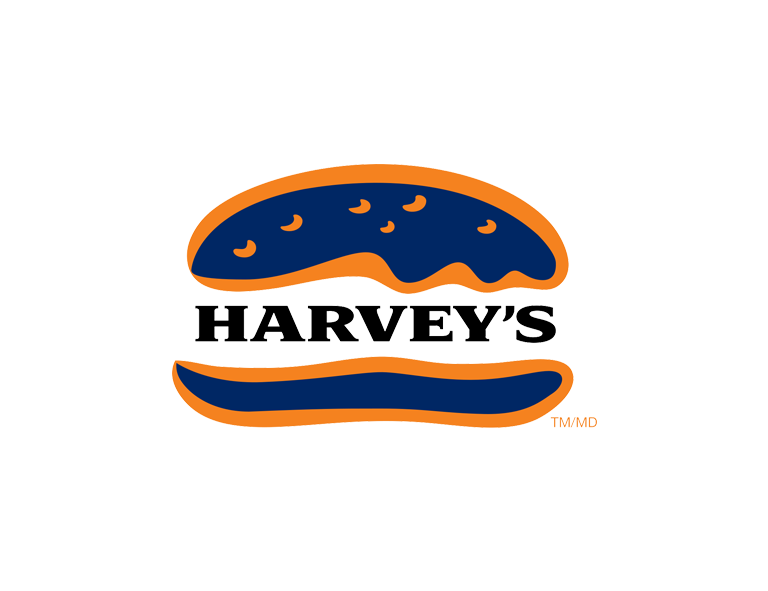

Zero Food Waste is an organisation that aims to reduce food waste by increasing food donations to people in need and using non-eatable food and unavoidable food waste for productive purposes (composting, energy).
We act as a middleman between the big players of the Food Industry (Restaurants, Supermarkets) and the most important local charities.
This way, we not only reduce world hunger and landfill waste but also contribute to a planet with less contamination and more available resources.
We have more than 20 partners in the food industry, mostly associations from the Food Industry.
This let us receive food donations from 3000+ restaurants and supermarkets that go directly to the 50+ charities associate we collaborate with.
We have managed to donate 100 million Tonnes of food annually since we started this project in 2019 and we hope to get double the donations amount by 2022
We will launch a platform on the website to allow food donors to get in touch with charities.
Their food donation offers will be published there and NGOs will be able to get in touch with donors to accept them.
We are also expanding to Europe next year and we plan to keep expanding progressively to make the biggest impact as possible